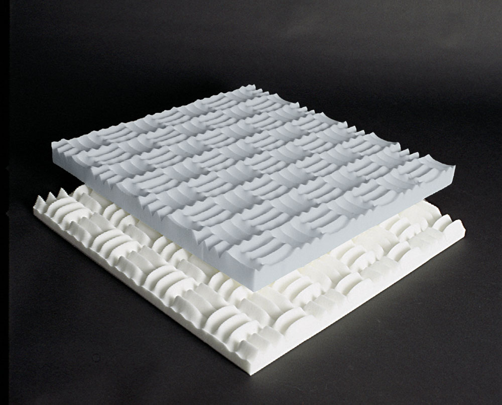

|
|
|
|

Sonex Classic Panels can also be used in listening rooms, restaurants,
production areas and other locations where sound absorption
is critically important. Panels offer excellent acoustical control
across all frequencies with Noise Reduction Coefficients (NRC)
ranging from 0.75 to 0.80.
Made of a Class 1 fire-rated willtec foam, Sonex Classic panels are
available in natural, painted, or Colortec finishes. Panels are
generally are arranged with an alternating male and female pattern.
Colortec
panels use a process through which the entire thickness of the
foam panel is dyed a deep charcoal. These panels are especially
appropriate for high-traffic areas.
Sonex Classic panels are easy to install on any wall and/or
ceiling surface with PA-02 adhesive. Can be cut using a sharp knife.
Product Data
Sheet
Paint Colors:
Charcoal
Beige
Pricing
| Color |
Sheet
Size |
Thickness |
Sheets
Per Box |
Coverage |
Part # |
Price
Per Box |
Natural
White |
24" x 48" |
2" |
8 |
64 sq.ft. |
SOC-2W |
$294 |
Natural
Grey |
24" x 48" |
2" |
8 |
64 sq.ft. |
SOC-2G |
$253 |
Charcoal
Colortec |
24" x 48" |
2" |
8 |
64 sq.ft. |
COC-2 |
$299 |
Please call for painted, Colortec or HPC pricing. 800.801.9378
|
|
|